Cani


Cane: amico dell’uomo! Questo è un fatto indiscutibile. Per la prima volta questi animali sono stati addomesticati da tempo immemorabile e per innumerevoli secoli sono stati fedeli compagni e amici di persone di tutto il mondo. Intelligenti, leali, coraggiosi, non tradiranno mai il proprietario, indipendentemente dal tipo di cane: un chihuahua decorativo o un levriero enorme e forte.
Gatti


I gatti sono considerati uno degli animali domestici più amati e popolari, quindi molte persone vogliono conoscere curiosità sui gatti. Questi animali domestici sono abbastanza facili da curare, moderatamente intelligenti e molto affettuosi e meritano giustamente un buon trattamento da parte di milioni di persone Ogni anno in Asia vengono mangiati circa quattro milioni di gatti.
Criceti
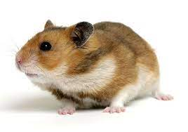 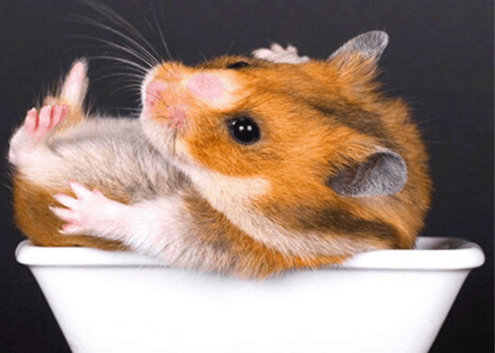 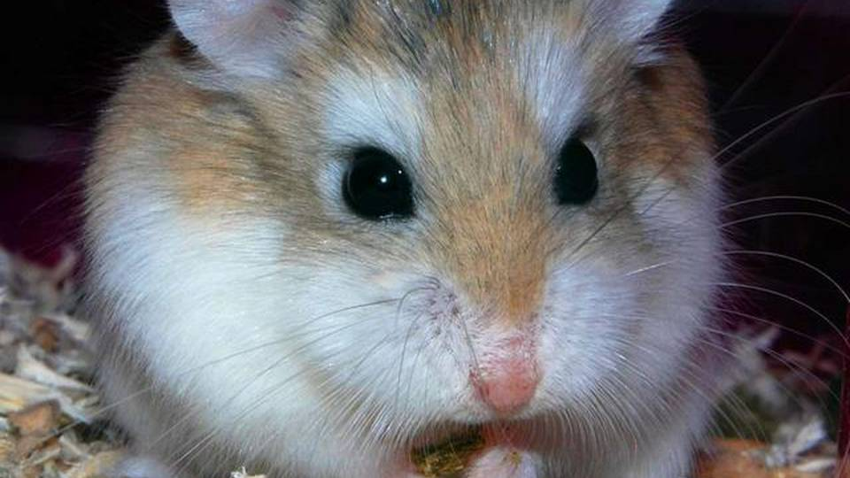Puoi incontrare un criceto non solo in pianura, ma anche in montagna. Gli animali vivono anche a un’altitudine di 3,5 mila metri sul livello del mare. Le tane del criceto non sono mai difficili. Hanno una semplice rete di corridoi e un paio di uscite. A seconda della specie, i criceti raggiungono una lunghezza di 5–35 cm! La specie più grande è il criceto europeo. I criceti che vivono nell’ambiente naturale possono essere portatori di malattie pericolose. Questo fatto è stato preso in considerazione dal governo vietnamita. È vietato tenere animali domestici qui. I trasgressori vengono multati!
Ricci
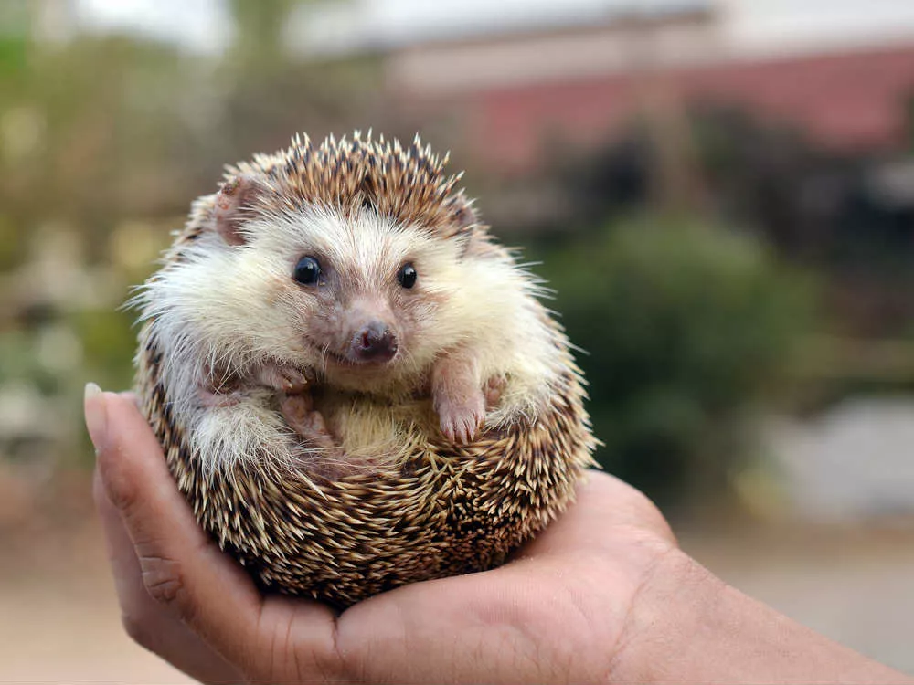 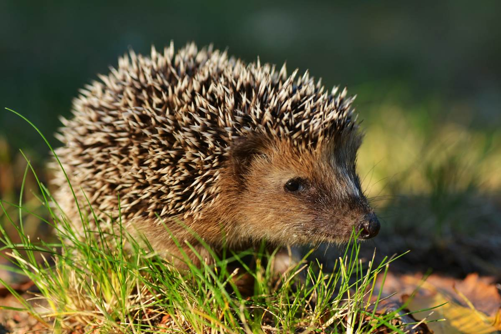 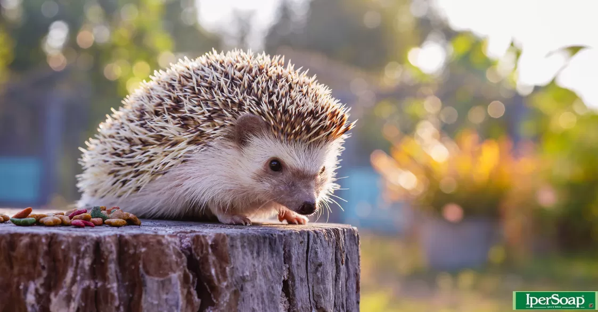A quanto pare, i ricci sono creature piuttosto insolite. I curiosità sui ricci sono sfaccettati e vari. Ci sono molte leggende associate a questi animali, in particolare sui loro aghi invece della lana. Il riccio dalle orecchie è misterioso. curiosità su di lui ti interesseranno e ti permetteranno di pensare. Leggi di seguito i fatti più interessanti sui ricci. Ci sono circa 10.000 aghi sul loro corpo. Gli aghi sul corpo del riccio vengono aggiornati una volta ogni tre anni.
Pesci
 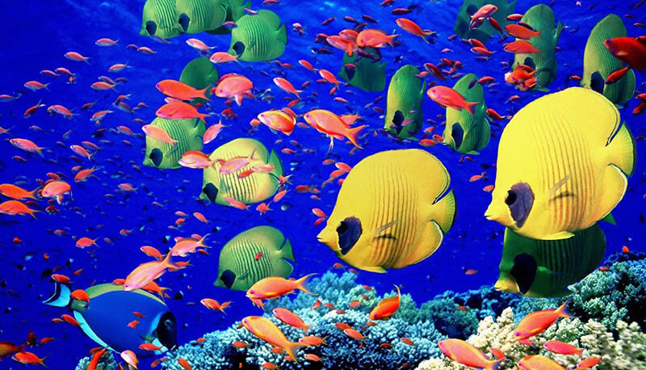
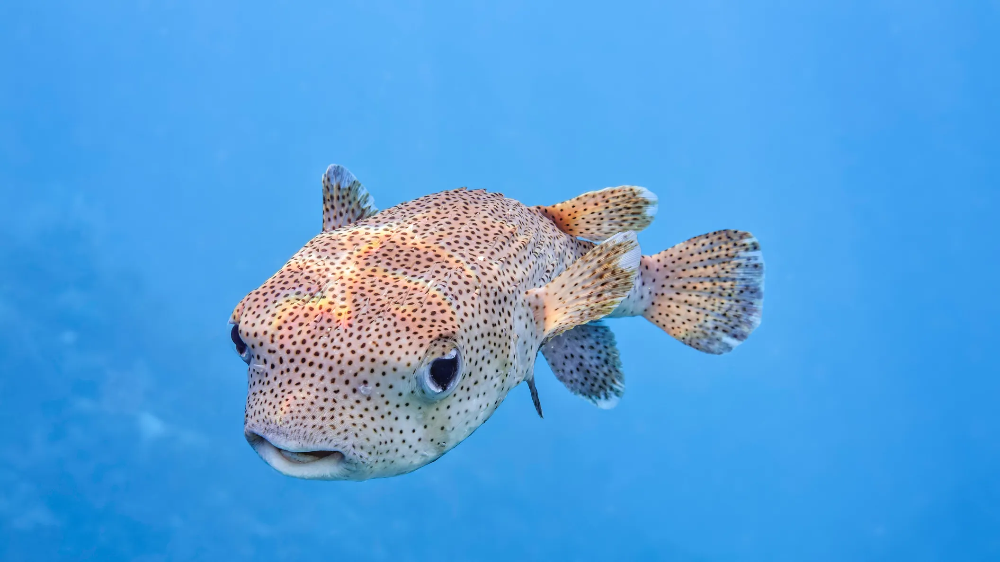
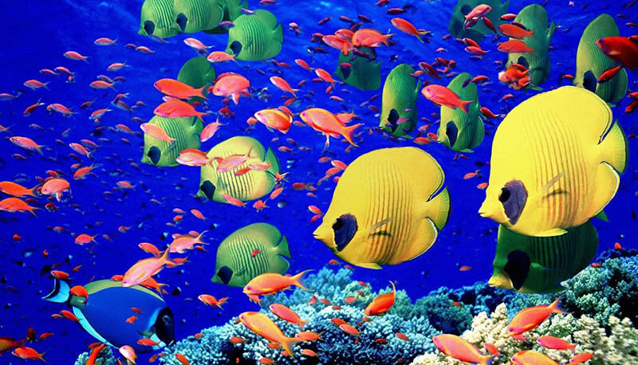
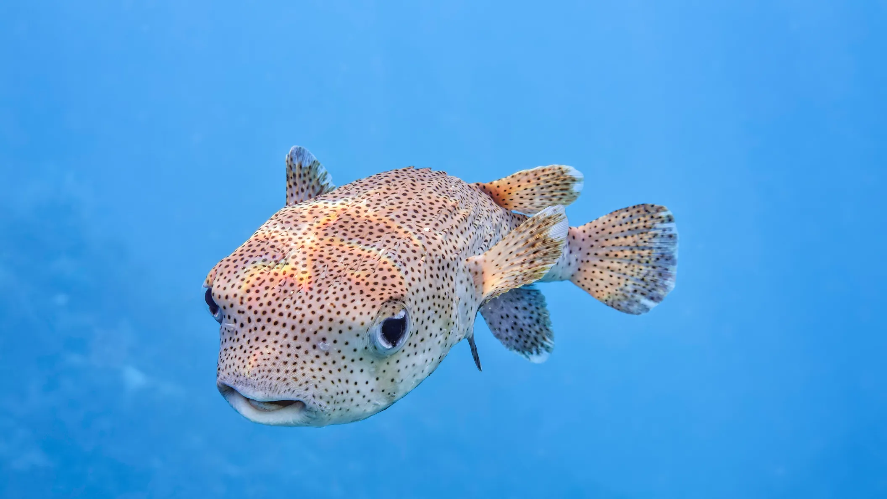
Pesci: creature straordinarie nella loro diversità e sono estremamente importanti per noi. Questo è cibo, una preziosa risorsa rinnovabile e molto altro ancora. Il pesce più grande del mondo: lo squalo balena, il peso di cui può raggiungere 20-25 tonnellate e la lunghezza supera i 17 metri. Fortunatamente, questi pesci sono completamente innocui (curiosità sugli squali). Attualmente ci sono circa 32mila specie diverse di pesci sulla Terra e ne si trovano regolarmente altri.
Lucertole
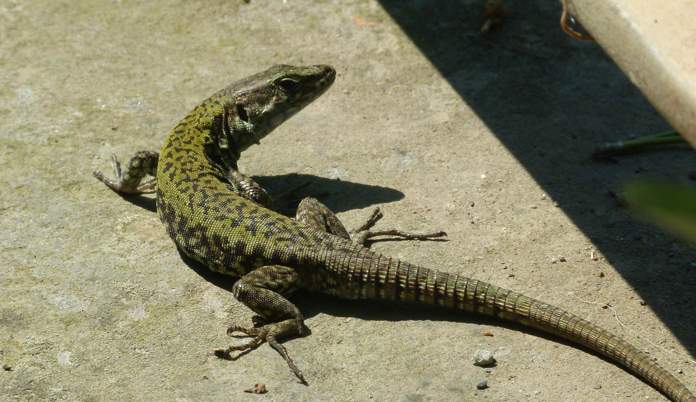 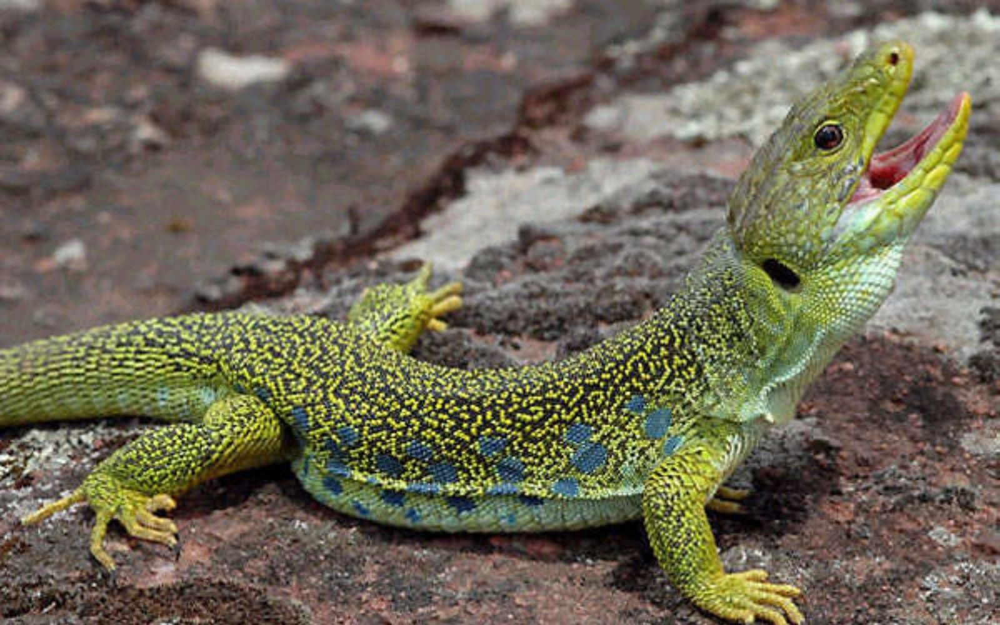 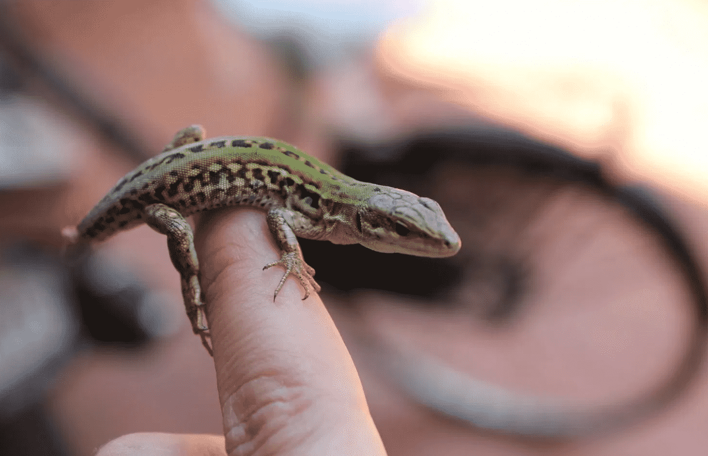Le lucertole: le creature potrebbero non essere le più intelligenti sulla Terra, ma sono una delle più tenaci — questo è certo. Reazione al fulmine, astuzia, capacità di sopravvivere al freddo in letargo: tutto questo li rende adatti a sopravvivere in una varietà di condizioni. La maggior parte specie di lucertole possono far cadere la coda per distrarre un predatore e scappare, quindi la coda ricrescerà. È vero, crescerà lentamente e sarà più corto della precedente e non ci saranno ossa nella nuova coda.